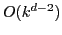
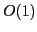

Tensor products of one-dimensional multilevel systems can be used to represent multivariate functions. Then, by a proper truncation of the resulting series expansion, we can construct problem-dependent sparse grids, which allow us to efficiently approximate higher-dimensional problems for various norms and smoothness classes.
We discuss additive Schwarz preconditioners for the corresponding systems
of linear equations. The problem of finding the optimal diagonal scaling
for the generating system subspaces can be solved by means of Linear
Programming. For e.g.  -elliptic problems, an optimally scaled
regular sparse grid generating system exhibits a condition number of the
order
-elliptic problems, an optimally scaled
regular sparse grid generating system exhibits a condition number of the
order

for levelThis is suboptimal compared to the

condition numbers realized by prewavelet discretizations that directly rely on multiresolution norm equivalences. However, we will discuss an approach that likewise realizes condition numbers in the generating system without specifically discretizing the detail spaces via more complicated basis functions.This is joint work with M. Griebel (University of Bonn) and P. Oswald (Jacobs University Bremen).